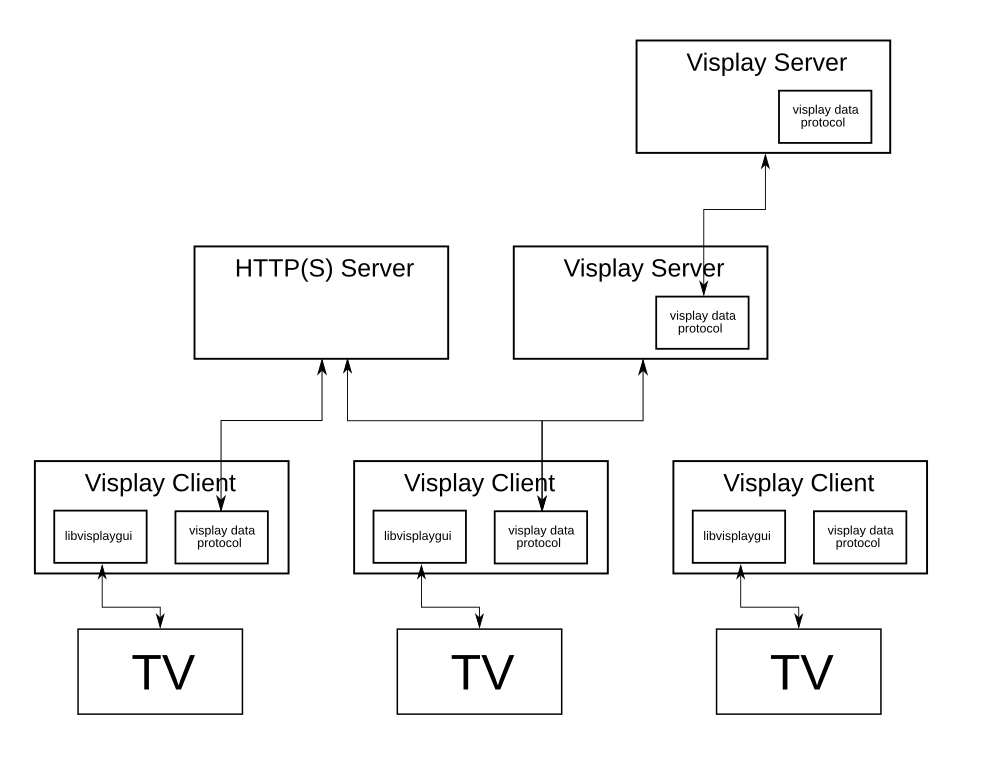

Project Organization¶
Architecture Diagram¶
Here is a diagram of the Visplay architecture. Each of the components of this architecture are described below the diagram.
{kind=link}
Visplay Server
This doesn’t exist yet. It will expose assets/playlists/sources over HTTP.
Visplay Client
The Visplay client is run on the device controlling the TV. It useslibvisplayguito interface with the display, and optionally communicates with Visplay servers, normal HTTP(S) servers, or even IPFS to get asset/playlist/sources information.
libvisplaygui
This is a library which interfaces directly with the hardware to display content to consumers. The goal of this library is to abstract the hardware details away from the client.
HTTP(S) Server
This is a placeholder for any potential asset source. In reality, we are not restricted to HTTP(S). In fact, we have already implemented IPFS and we could implement FTP or some other protocol fairly trivially.
Protocols¶
There are two main protocols that Visplay is built around: the data protocol and the display protocol.